These are my blog posts for the 2023 Galloway excursion to the UK. This webpage was written in Markdown because Weebly was proving too difficult to be useful.
You may scroll down to read them all chronologically. Alternatively: Here is a helpful table of contents.
The standards of safety have drastically changed over the years. Where formerly we built using fragile materials and without consideration for safety, we now follow strict codes for what materials and designs are allowed. This Tuesday we toured the Globe Theater, a reconstruction of the theater of the same name constructed by William Shakespeare's theatre company.
The recreation is uses similar building materials and techniques, making the theater unique and as amazing as it was when it was first putting in plays. The original design is partially lost, however, so this reconstruction may be in some parts inaccurate.
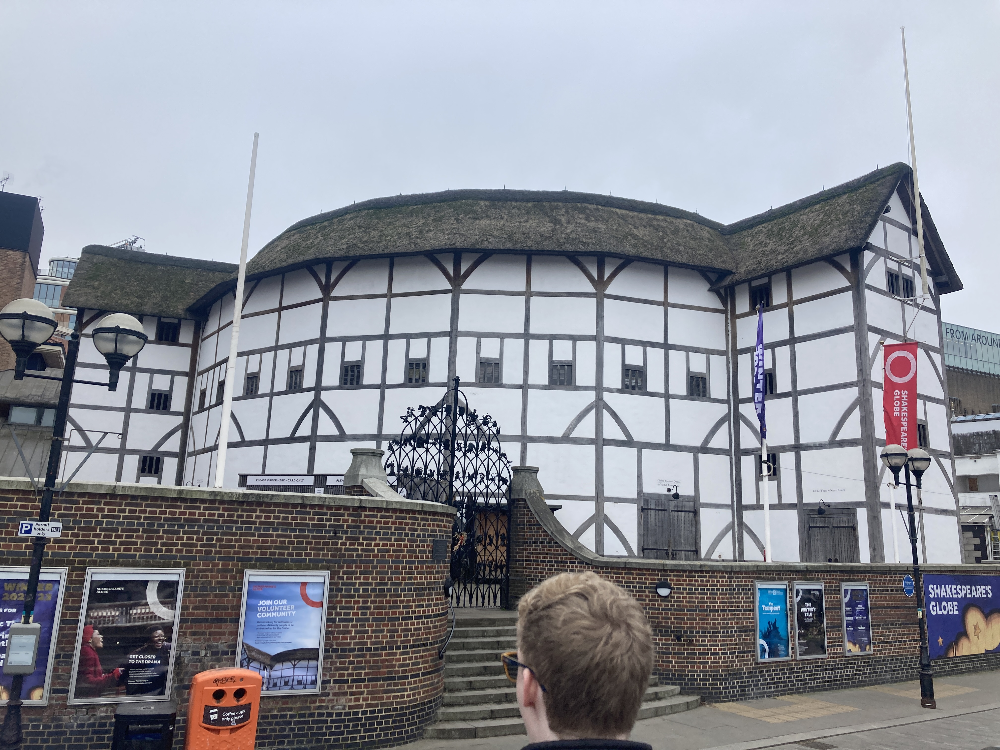
This historical accuracy presents challenges of course. The reason the original Globe Theater is no longer standing is because of the materials used. The thatched roof and timber framing of the theater and its neighbors made it extremely susceptible to fire. The theater burned down twice in Shakespeare's time. This was a problem for most of London, as these materials were very common for the time.
The thatched roof in particular became a point of contention for the design. The creator wanted it for historical accuracy, but the city had still had laws in place to prevent a massive fire. The compromise was the addition of a set of fire sprinklers lining the roof. While sticking out and causing water lines to be added, this should hopefully prevent the same disastrous end faced by its predecessors. The theater also contains lighted exit signs to direct people in the event of an emergency.
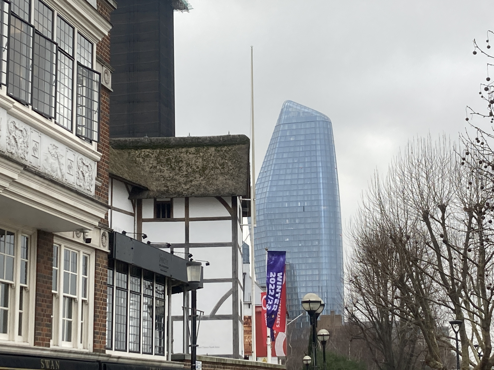
Compared to modern buildings, there is a stark difference in construction. Modern buildings are towering masses of glass and steel, with extensive codes around accessibility and emergency protocol. This allows current day buildings to dwarf older ones in terms of scale and scope.
Even older buildings are still partially standing, including the remains of Winchester Palace, now in crumbling ruin. This building dates back to the 13th century, constructed of stone brick. This photo in particular is of the palace's great hall.

Harod’s, a more modern department store, known for carrying absolutely everything, pays homage to ancient architecture. One wing of escalators is decorated with ancient Egyptian hieroglyphics and other nods to pharos and famous landmarks. Even the light sources are fashioned after an older style, giving the area an ancient feel.
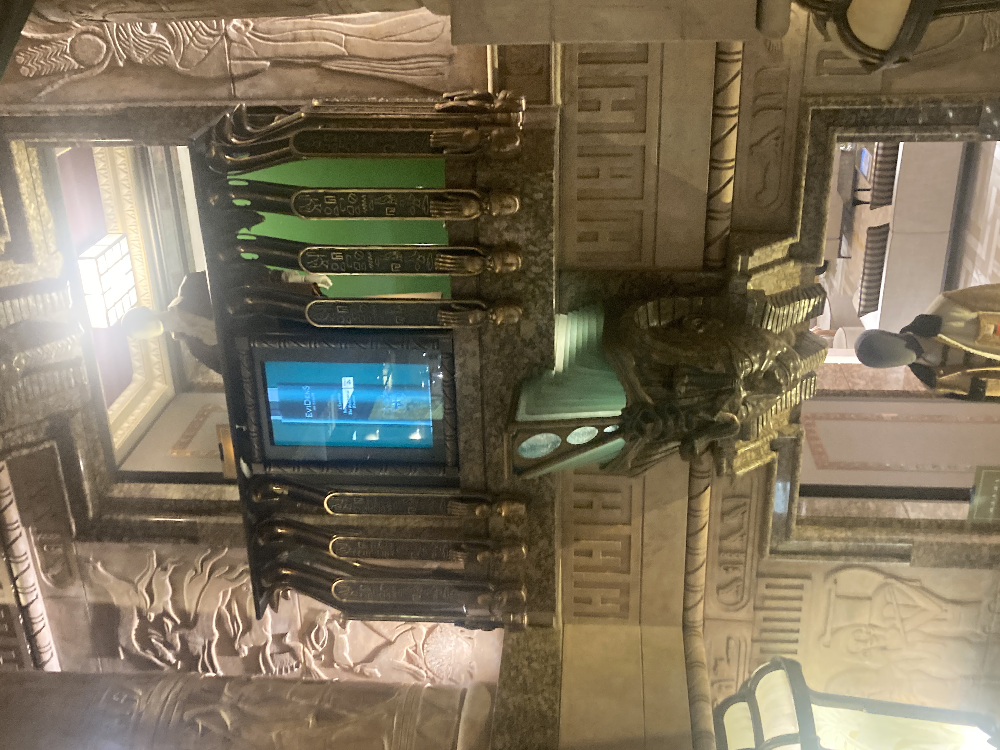
The big issue that can arise is that of appropriation. When does a humble homage turn sinister? Of course the ancient egyptians are no longer here to judge us, but is there an issue with using the aesthetics of an ancient culture as set dressing? I'm undecided on the matter but Harod’s use of hieroglyphics, and even a smaller statue of some Pharaoh as merely decor for a set of escalators, shows a lack of care for what these symbols mean.
This decor can be contrasted with other part of Harod’s, containing sleek designs of glass and metal, and LED lighting. This is much more practical decoration, and doesn't tread on any cultural toes.
The Tower of London also has very visible signs of change. The are has had several additions and extensions over the years, visible in the changing brickwork and architecture. The most recent changes had added moving walkways to some interiors, and modern concessions like heating. Most of the older architecture has been kept as-is on the outside.
The photo below is of a part of the grounds that was roped off. Soldiers often guard part of this area. It presumably houses some tower of London staff. This older architecture is clearly visible in this photo. 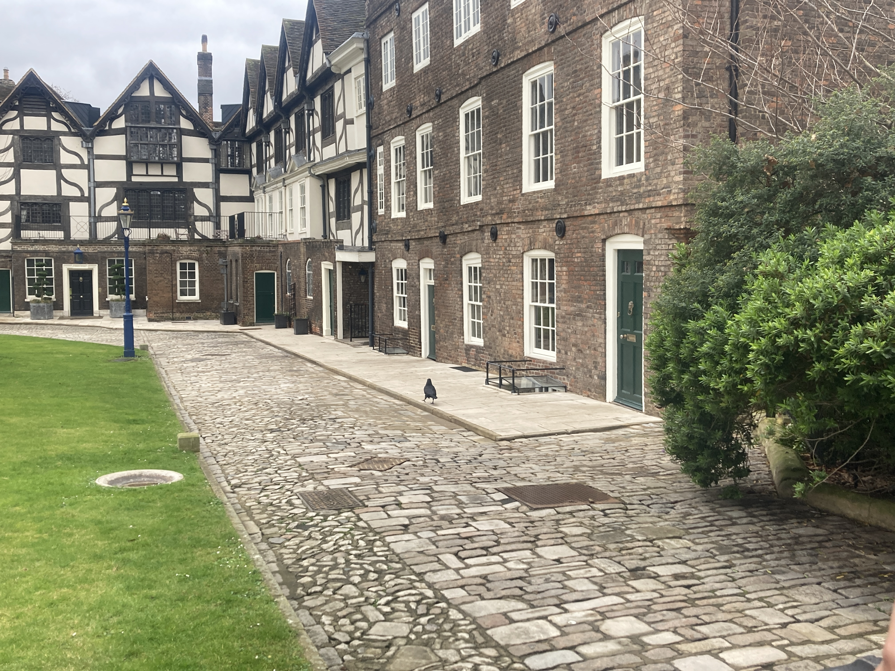
Shakespeare’s village has drastically morphed and changed over the years. The buildings and construction methods have meant Shakespeare’s original home is one of the only still standing from its time. The photo below shows a stone that would sit as the base of a structure in the center of town. The photo below it is a painting that includes said structure.
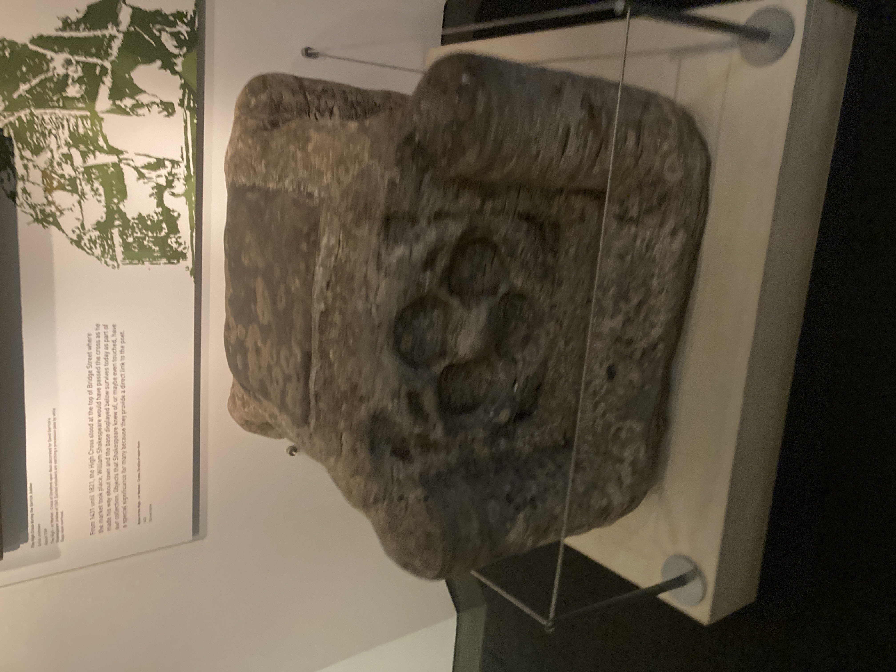
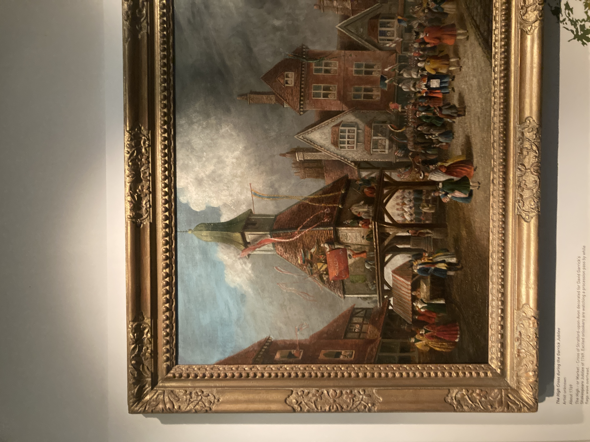

The main reason for its longevity: its importance. A group of fans, including Charles Dickens, helped fight to buy and preserve the original home. Nowadays the home serves as a museum and exhibition of the customs and styles of living during that era. One big change is that of a bed in your main living room, close to the windows. This would be done as a display of wealth, to show people on the street as well as guests that you can afford to have an extra bed just sitting there. Now we keep our beds further away from the street for privacy. The idea of including a bed in a living room as a status symbol is similarly absurd.
Shakespeare’s father was a glove maker. This meant he required lots of leather. The process of turning animal hide into leather has changed dramatically over the years. Originally, this process required large amounts of human waste. Urine would be collected from houses and sold to tanners and other leather workers for them to hide into leather. The ammonia in the urine would soften the hide and help with working with the material. Tanners would also beat animal feces into the hide, the bacteria would again soften the skin. This made the process of working with leather a smelly one.
Nowadays we have better methods of making leather. We can synthesize ammonia directly and have more methods for working hide into leather. We can also now produce synthetic leather. This is cheaper and more ethical, as you do not have to slaughter animals to produce it.
The British museum is filled with ancient artifacts. These items, previously existing in their home countries and continents, now reside thousands of miles away in a foreign nation.
Some would argue that the countries from which these items reside may not take proper care of their own artifacts. An argument I ran into personally was that everyone has the opportunity to visit these artifacts, since all these museums offer free entry. This ignores the simple costs of existing in a foreign country. For any London resident, it may prove easy and free to take an hour or two out of your day, visit a museum for free, and then continue. But for those not in Britain, this is not so simple. Imagine a Greek that wishes to visit and view some of their country's history. Instead of going to a local museum to see this, they must now book a flight or series of train rides to Britain, then pay for a place to stay, food to eat, not to mention any other expenses that may arise from traveling to a foreign nation. You can see how these costs might quickly add up, and turn a "free" museum visit into a thousand dollar expedition.
In recent years the British government has begun to return some of the stolen artifacts. This is a positive move but still a small one. The museums, while being free, bring in a large amount of tourism money. This makes the proposition of returning items costlier, as the more valuable items going away will result in fewer people coming to Britain to visit.
Photos are of hieroglyphics and a mummy. Both are Ancient Egyptian.
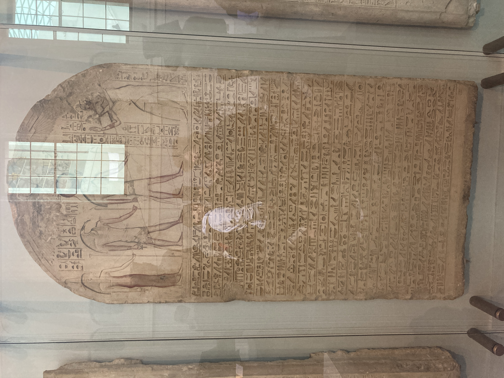 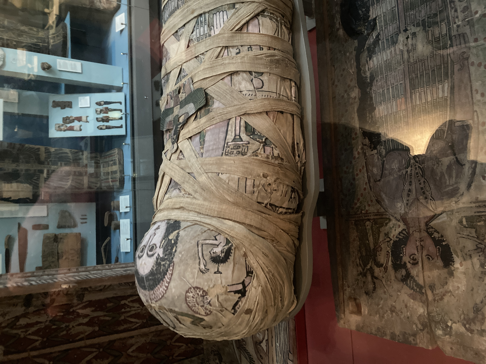
Money has taken many forms over the ages. From rough silver and gold pieces, their worth determined by their weight, to more complex objects with immaterial worth. In our first move away from the bartering system, we used materials like silver and gold. These worked well for items of value as they appeared to have inherent value. Silver and gold were valued because of their looks and assumed value. Next came coins. These still have value in their materials, but now were embossed with the images of rulers. Modern day, our pieces of money have no value in their materials, but in our trust in the institutions that back them. I trust a five dollar bill not because I like green paper, but because I trust that the US Government will continue to uphold the US Dollar for long enough for me to use the bill.
But what if someone were to intentionally deceive another with a forged bill? Back in the day this was simple. You could create a metal alloy between a rare and common metal. This might give your slightly more of the metal, or could increase the mass of the metal itself (weight being the primary unit these metals were valued in). This became slightly harder with coins. You now had to create your own stamping system to forge the money. Some societies protected against this with higher precision in their coins, some by flattening the sides in interesting ways. Today's money employs a myriad of anti-forgery systems. From cotton paper, to microfibers embedded in the parchment, to strips of UV ink that are completely invisible under ordinary light. To learn more about the tactics employed by the US Treasury: click here.
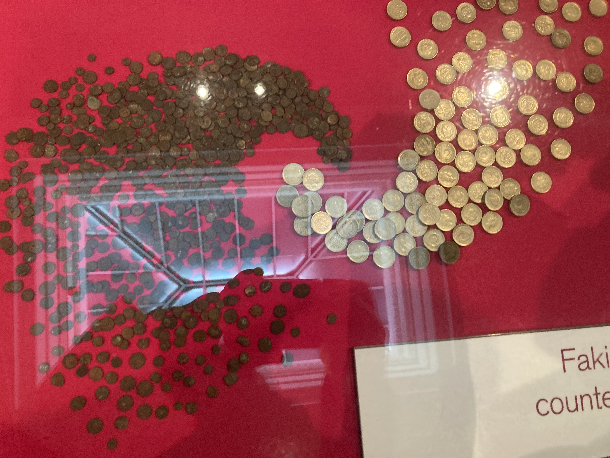The Queen's Guard riding horses outside of Buckingham palace
J.K. Rowling, author of the Harry Potter series of books, has come under fire repeatedly for transphobia. She has rallied with others calling trans women "men in dresses." Sided with and supported many who directly opposed legislation to make it easier for trans individuals to change their gender on government documents. This includes Maya Forstater, an individual who wrote at one point: "I don’t think men who think they are women are oppressed, and I do think they can be laughed at."

Transphobia was not uncommon decades ago, but Joanne and her friends seems firm in staying in the past. Her books also contain many outdated and downright racist references and depictions. Most asian characters named with first and last names from vastly different cultures. One of the only asian characters in Harry Potter is named only a few letters off from a popular slur. There is also the issue with the goblins, the greedy long nosed creatures that run all the banks. A description that could just as easily come from an antisemitic cartoon. It is true that most of these are common traits for the creatures, but instead of pushing back on these traits she decides to have them run all the banks in the wizarding world. The recent game "Hogwarts Legacy" even makes references to blood libel and seems to parody a Shofar.
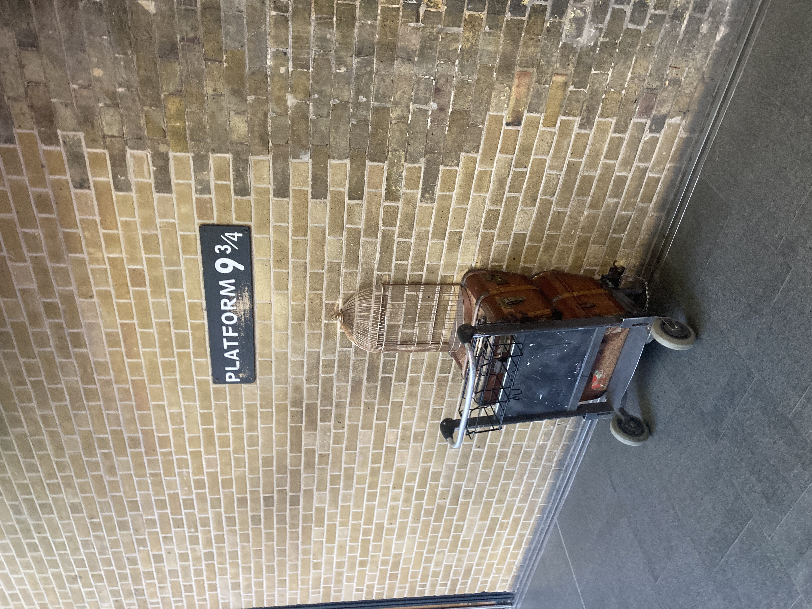
In Edinburgh Castle, there is a prison. Many of these prisoners, in their spare time, would carve graffiti into the wooden cell door. These were names, images, a depiction of a moose, whatever it took to stave off the boredom.
During the American revolutionary war, some prisoners were sent to Scotland and held in the castle. One of these individuals carved an early "stars and stripes" flag into the door.
Photos of some of the carvings on the door;
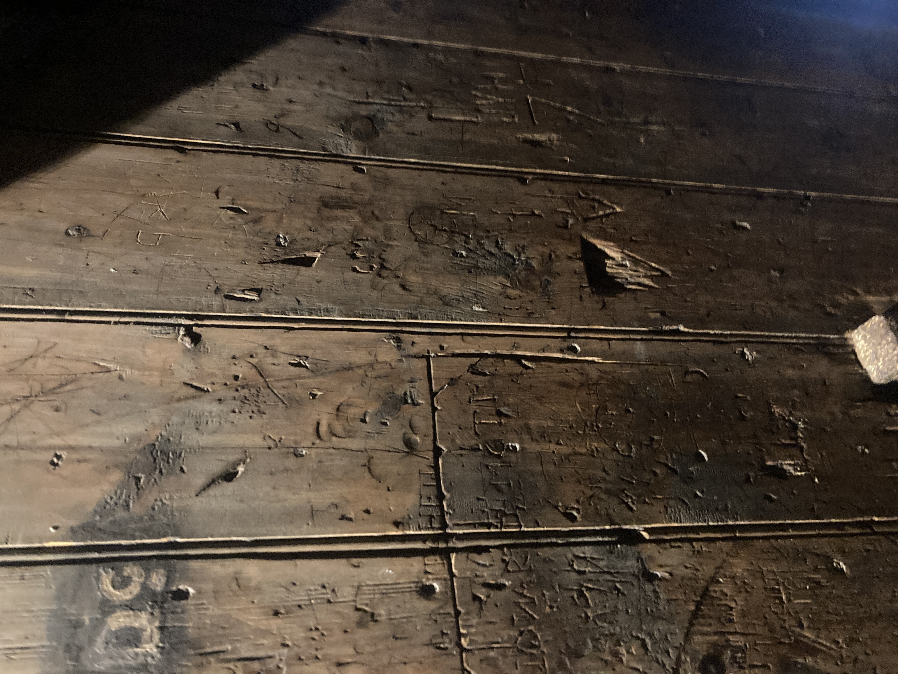 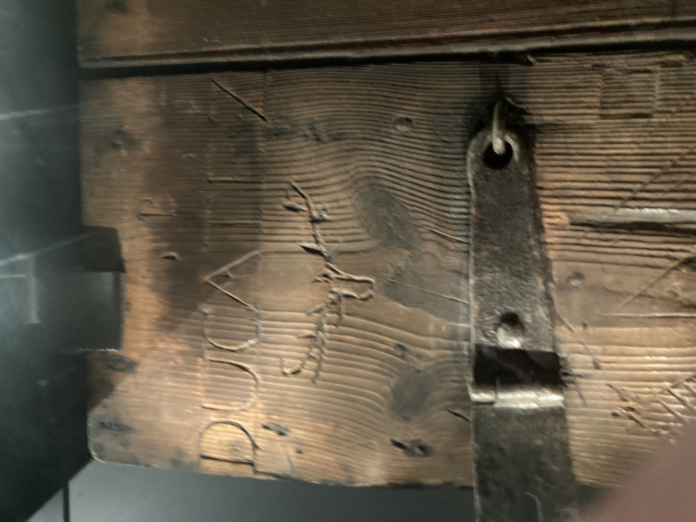